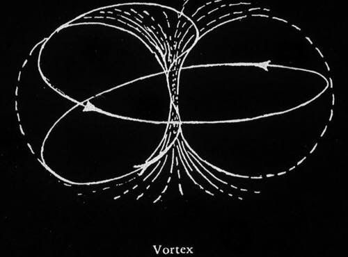

dropout, 23yo, based in santiago de chile. focused on finding growth levers for: startups, ventures, and cool things ;).
over the last 6 years i've built businesses, communities and fun stuff at the places i've worked.
interests: ai safety, cognitive science, venture capital, community stuff & anything borges related.
